1. 개요
Resize Image Manager는 마야(Maya) 환경 내 대용량 텍스처 리사이즈 공정을 자동화하고, 뷰포트 최적화를 위한 쉐이더 스위칭(Shader Switching)까지 원클릭으로 해결하는 독립 유틸리티 툴입니다.
무거운 렌더링용 쉐이더(Redshift 등)를 유지하면서도 뷰포트용 쉐이더(Lambert 등)를 새로 생성하여 가벼워진 텍스처를 자동으로 연결해 줍니다. 별도의 파이썬 모듈 환경 세팅 과정 없이 제공된 실행 파일(.exe)만으로 즉시 구동됩니다.
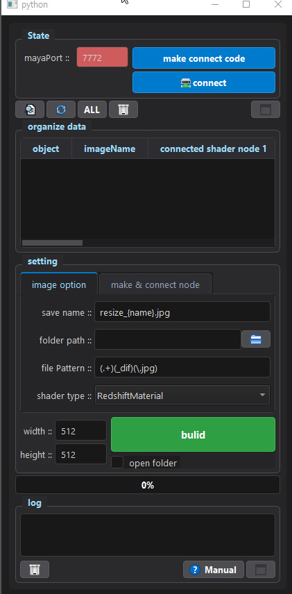
Main UI Overview
2. 툴 작동 원리 (뷰포트 최적화)
본 툴은 단순히 이미지만 줄이는 것을 넘어, 씬(Scene)의 구조를 파악하고 가장 효율적인 방식으로 마야의 노드(Node)를 재배치합니다. 여러 개의 오브젝트가 단 하나의 엔진을 공유하더라도 툴이 중복을 스스로 걸러내어 단 1번만 텍스처를 생성하고 교체합니다.
🔍 쉐이더 스위칭(Shader Switching) 다이어그램
-
렌더링 품질 유지: 기존 무거운 Redshift 쉐이더는
rsSurfaceShader플러그로 밀어 넣어 실제 렌더링 시에는 원본 고해상도로 출력되게 보호합니다. -
뷰포트 가속: 마야 화면에 직접 보여지는
surfaceShader자리에는 방금 생성한 가벼운 텍스처(Lambert)를 꽂아 넣어 작업 속도를 극대화합니다.
3. 설치법 (포트 연결) 및 주의사항
툴이 마야의 데이터를 실시간으로 읽고 쓰려면 두 프로그램 간의 소켓(Socket) 통신 연결이 필요합니다. 아래 순서대로 세팅을 진행해 주세요.
-
마야에 버튼 만들기
툴 우측 상단의 [make connect code] 버튼을 누르면 탐색기가 열립니다. 생성된 파란색 파이썬 파일(
dragMayaViewPort.py)을 마야 작업 화면 정중앙에 드래그 앤 드롭합니다.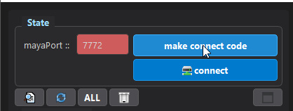
1. 버튼 클릭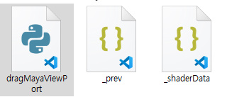
2. 생성된 파일 드래그 -
마야 서버(Port) 열기
파일을 드래그하면 마야 상단 쉘프(Shelf)에 새롭게 붉은색 'resize' 아이콘이 생깁니다. 이 버튼을 클릭하면 마야 측 통신 서버가 열리며 스크립트 에디터에 알림이 뜹니다.
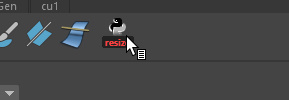
1. 쉘프 버튼 클릭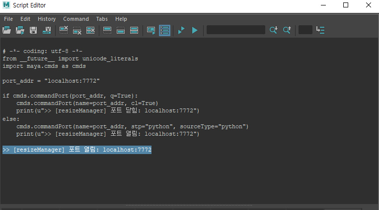
2. 마야 로그에서 포트 열림 확인 -
툴과 최종 연결 (Connect)
다시 툴로 돌아와 [connect] 버튼을 누릅니다. 포트 번호칸이 붉은색에서 파란색(🟦)으로 변하면 연결이 완벽하게 성공한 것입니다.
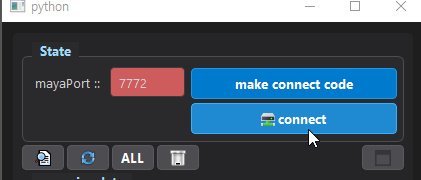
연결 전 (오프라인 상태)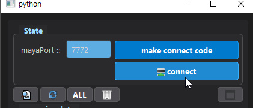
연결 성공 (온라인 상태)
리사이즈 작업을 모두 마쳤다면, 마야 쉘프의 'resize' 아이콘을 한 번 더 클릭하여 열려있는 통신 포트를 반드시 닫아주시기 바랍니다. (포트가 닫히면 마야 우측 하단 로그 창에 '포트 닫힘' 메시지가 뜹니다.)
4. 텍스처 데이터 등록 및 필터링
마야 씬에서 오브젝트를 선택하여 툴의 작업 리스트(Table)로 데이터를 가져오고, 불필요한 노드를 정리하는 단계입니다.
-
마야에서 오브젝트 선택 및 로드
마야 뷰포트에서 리사이즈할 오브젝트들을 선택한 후, 툴 중앙의 탐색기(문서 돋보기) 아이콘을 클릭하여 쉐이더 정보를 불러옵니다.
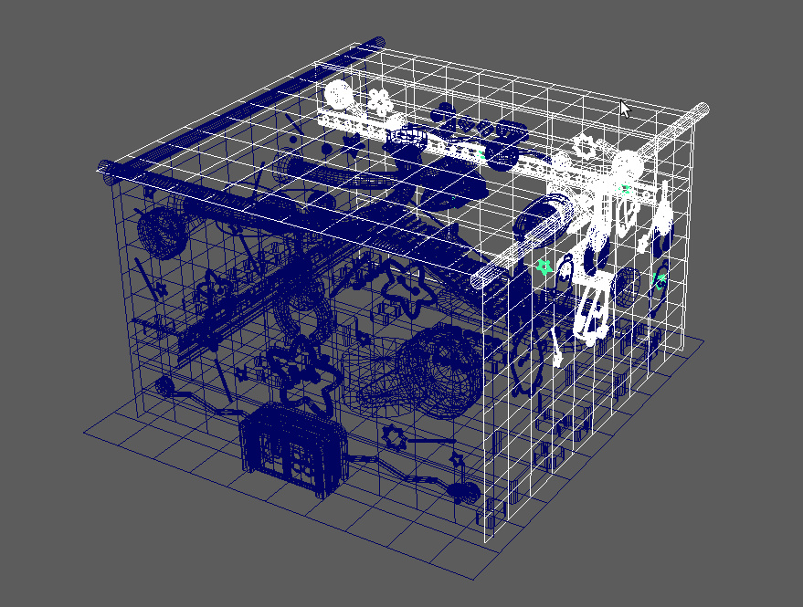
1. 마야(Maya) 오브젝트 선택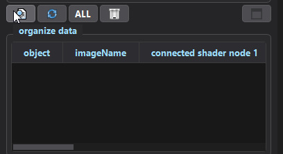
2. 탐색기 아이콘 클릭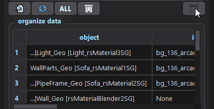
3. 툴 테이블에 데이터 로드 완료 -
데이터 정리 (이미지가 없는 노드 제외)
테이블을 보면 텍스처 파일이 연결되지 않아
imageName이 None으로 표기된 항목들이 섞여 있을 수 있습니다. 이때 새로고침(🔄) 아이콘을 클릭하면 불필요한 요소(None)들을 리스트에서 즉시 깔끔하게 필터링하여 제외해 줍니다.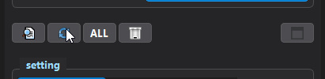
1. 새로고침(🔄) 아이콘 클릭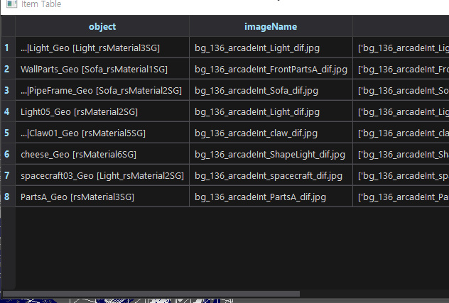
2. None 항목이 제거된 깔끔한 리스트 -
작업 대상 선택 (전체 선택)
테이블에 등록된 항목 중 리사이즈를 진행할 항목을 마우스로 드래그해 선택합니다. 전체를 지정하려면 [ALL] 버튼을 누르세요.
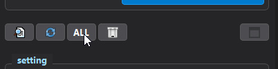
1. [ALL] 버튼 클릭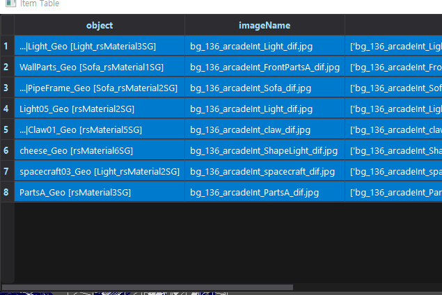
2. 테이블 전체 항목 선택됨 (파란색) -
별도 창으로 넓게 보기 (선택사항)
목록이 너무 길어 한눈에 보기 힘들다면 우측 상단의 [새 창] 아이콘을 클릭하세요. 리스트가 독립된 넓은 창으로 팝업됩니다.
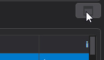
1. 창 분리 아이콘 클릭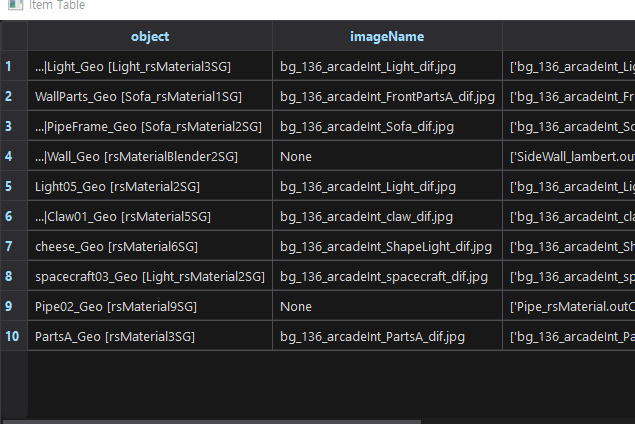
2. 분리된 팝업 창에서 넓게 확인
5. 툴 사용법 (설정 탭 상세 가이드)
데이터 등록을 마쳤다면, 아래 두 개의 탭(Tab)에서 저장 규칙과 노드 연결 방식에 대한 세부 설정을 진행합니다.
▶ Tab 1: image option (이미지 추출 및 저장 설정)
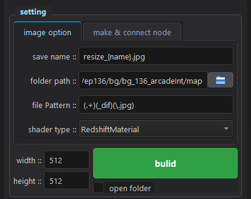
image option 탭 UI 화면
리사이즈된 이미지가 저장될 이름의 규칙입니다.
※ 원리: {name}이라는 예약어는 마야 원본 텍스처의 이름으로 자동 치환됩니다. 따라서 이 글자는 절대로 지우면 안 됩니다.
(예: resize_{name}.jpg 로 설정 시 ➡️ 원본 bg_Light_dif가 ➡️ resize_bg_Light_dif.jpg 로 저장됨)
수많은 텍스처(노말, 스펙큘러 등) 중에서 어떤 이름표가 붙은 텍스처를 긁어올지 결정하는 정규식(검색 규칙)입니다.
※ 권장 사항: (.+)(_dif)(\.jpg) 기본값을 그대로 유지하는 것을 추천합니다.
만약 디퓨즈(dif)가 아닌 노말 맵(nrm)을 추출하고 싶다면, 양쪽 괄호는 건드리지 마시고 가운데의 _dif 부분만 _nrm으로 수정하시기 바랍니다.
우측 📁 폴더 아이콘을 눌러 리사이즈 결과물이 저장될 PC 내 경로를 직접 지정할 수 있습니다.
💡 자동 설정: 만약 작업 리스트(Table)에 원본 텍스처 파일(imageName)이 정상적으로 로드된 경우, 사용자가 일일이 지정하지 않아도 해당 원본 이미지가 위치한 디렉토리 경로로 자동 설정되므로 매우 편리합니다.
▶ Tab 2: make & connect node (마야 자동화 설정)
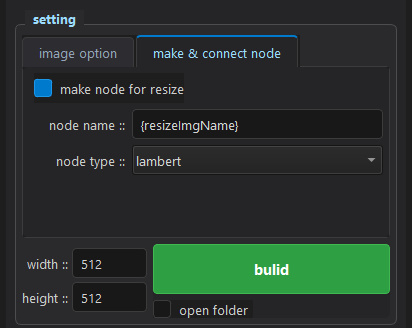
make & connect node 탭 UI 화면이미지를 단순히 저장만 하는 것을 넘어, 마야 내부에 뷰포트용 쉐이더 노드를 만들고 리사이즈된 텍스처를 꽂아주는 작업까지 자동화할지 결정합니다. 최적화를 위해 무조건 체크해 두는 것을 권장합니다.
새로 만들어질 뷰포트용 마야 쉐이더의 이름 규칙입니다. 반드시 {resizeImgName}이 포함되어야 오류가 나지 않습니다.
마야 뷰포트용으로 생성할 가벼운 쉐이더의 재질 종류(lambert, blinn 등)를 선택합니다.
🚀 최종 빌드 (Build)
설정을 마쳤다면 하단의 [width / height] 픽셀 사이즈를 지정한 뒤, 거대한 초록색 [build] 버튼을 누르시면 됩니다. 성공한 줄은 테이블에서 초록색으로 칠해지며 뷰포트에 텍스처가 즉각 반영됩니다!
6. 로그(Log) 확인 및 관리
툴 하단의 log 영역은 작업의 진행 상황과 통신 에러 등의 알림을 표시해 주는 중요한 패널입니다. 아래 기능들로 로그를 관리할 수 있습니다.
-
별도 창으로 넓게 보기 (Log Viewer)
로그 기록이 길어 좁은 영역에서 스크롤하기 불편하다면 우측 하단의 [새 창] 아이콘을 클릭하세요. 기록 내역이 독립된 넓은 뷰어(Viewer) 창으로 팝업됩니다.
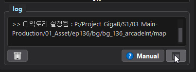
1. 창 분리 아이콘 클릭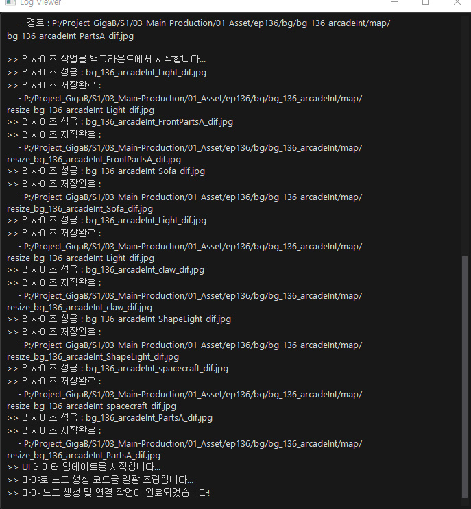
2. 넓은 화면의 Log Viewer에서 편하게 확인 -
로그 기록 지우기 (Clear)
이전 작업의 내역이 남아있어 새 작업의 상태를 확인하기 어렵다면 좌측 하단의 [휴지통] 아이콘을 클릭하세요. 로그 패널 내부의 텍스트가 모두 깨끗하게 지워집니다.
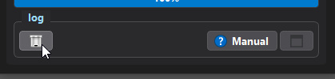
1. 휴지통 아이콘 클릭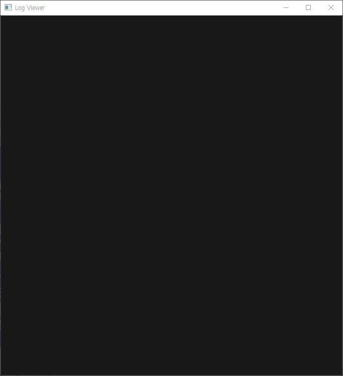
2. 깨끗하게 비워진 내역 창 확인
7. 기술 FAQ 및 참고사항
Q. 마야 스크립트가 아닌 외부 독립 프로그램(.exe)인 이유는 무엇인가요?
수십 장의 고해상도 이미지를 순식간에 리사이즈하기 위해 강력한 이미지 프로세싱 모듈인 OpenCV를 활용하고 있습니다. 마야의 기본 파이썬 환경에는 이러한 모듈이 내장되어 있지 않기 때문에, 마야 스크립트 형태로 툴을 배포할 경우 파트원 분들께서 개별적으로 파이썬 모듈을 세팅하고 버전을 맞춰야 하는 번거로운 과정이 동반됩니다.
어셋/모델링 파트 아티스트 분들이 불필요한 환경 세팅이나 모듈 충돌 이슈에 시간을 뺏기지 않고 즉시 본연의 창작 워크플로우에만 집중하실 수 있도록, 파이프라인 팀에서 모든 필수 동작 환경을 하나로 패키징하여 외부 독립 툴로 제공해 드립니다.
⚠️ 참고: 현재 RedshiftMaterial 의 diffuse_color 채널 전용으로 동작합니다.
현재 배포된 베타 버전의 셰이더 스위칭 자동화 로직은 Redshift 렌더러(RedshiftMaterial) 기반의 작업 환경에 맞춰 1차적으로 최적화되어 있습니다. 또한 다양한 텍스처 맵 중 diffuse_color 채널에 연결된 File 노드만을 우선적으로 추적하여 뷰포트용 머티리얼로 분리하도록 설계되었습니다.
향후 업데이트를 통해 Arnold 셰이더 및 Normal, Specular 등 기타 매핑 채널에 대한 확장 지원을 순차적으로 반영해 나갈 예정입니다.